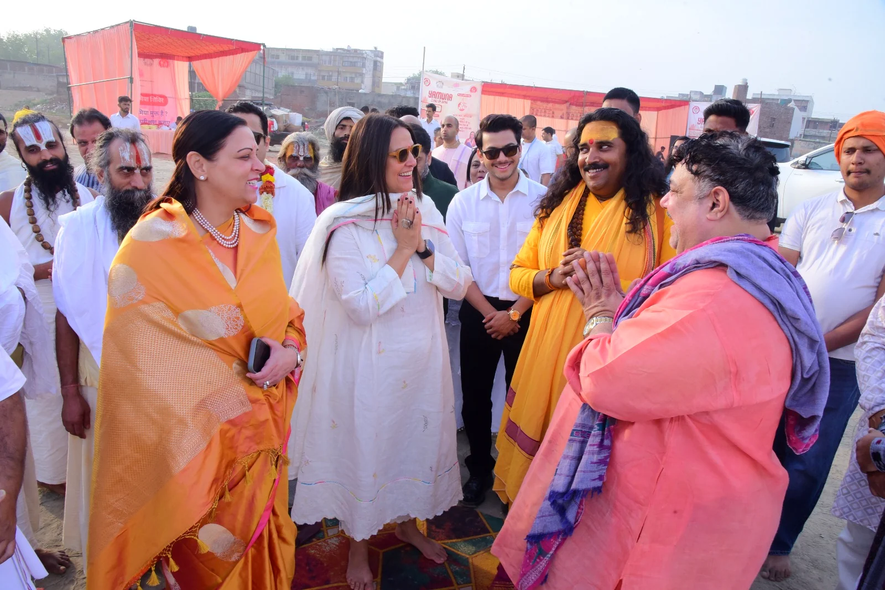
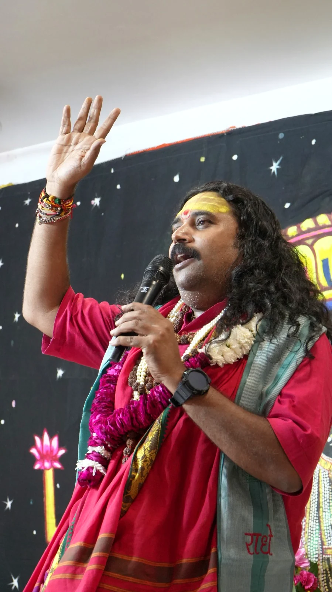
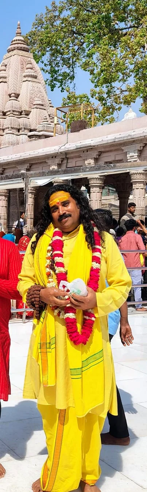
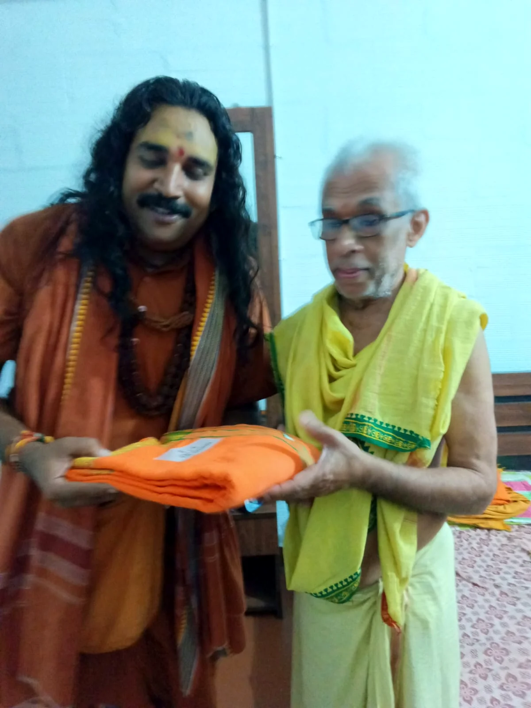

Gallery
Moments from the pariwar.
Real days, real seva, real people. No stock photos, no borrowed stories.












More moments from this seva will be added soon.
Gallery
Real days, real seva, real people. No stock photos, no borrowed stories.




More moments from this seva will be added soon.